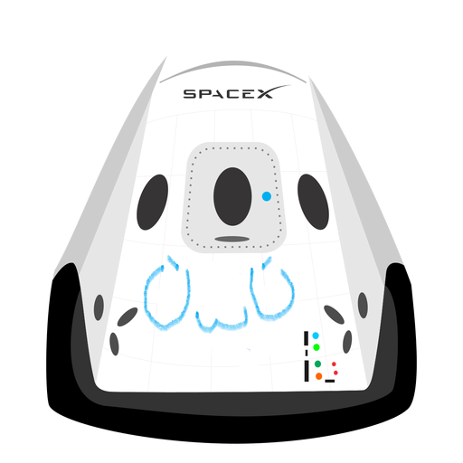

Hyperblog Tu blog de de cabecera
Este es el titulo atractivo e interensante del post
Y este es el párrafo de inicio donde vamos explicar las cosas increíble que se pueden hacer con ramas

Los blogs so la mejor forma de compartir información y tus ideas. Mucho mas que ir a conferencioas o salir en Youtube. Excepto si eres rockstar. Pero estadísticamente no lo eres . . . por ahora.
Suscribete y dale like